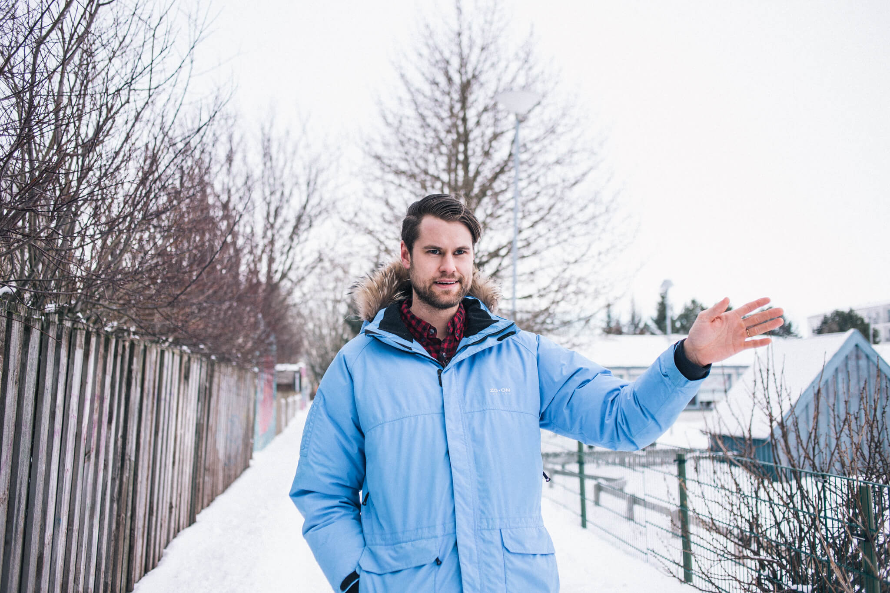

Ragnar Jón Ragnarsson has struggled with bipolar disorder since his twenties. Long periods of mania and depression were marked by delusions and suicidal thoughts. Conversations with psychiatrists and a move to Hrísey with his family accompanied the ordeal, but severe depression compelled him to seek help. Following extensive self-reflection, Ragnar has come to understand his mental illness, and with a good routine, he found love and a new perspective on the beauty of everyday life.
"My name is Ragnar but everyone calls me Humi, except for my mom," says Humi, shaking his head at the thought of the origin of his nickname. "It was some foolishness that stuck."
Humi describes himself as a typical guy in Hlíðarnar, where he lives with his wife Hólmfríður Helga and their two children, Höskuldur Sölvi and Snæfríður Edda. His hobbies revolve around music and carpentry. "The good leftovers of mania are that I can be very productive when I get interested in something. I have trained myself to follow through on the ideas I get," says Humi and admits that he might not be so typical, as he has struggled with bipolar disorder since his twenties.
Despite long-term illness, Humi received his diagnosis only four years ago, or so he estimates. "Years and timelines are not my strong suit. It all blends together. With bipolar disorder, there are long periods that one remembers little about, and I have difficulty placing things on a timeline."
Humi grew up in the northern part of Hafnarfjörður and has warm memories from there. "It was a good place to grow up, but elementary school was not a bed of roses. I was bullied and was very withdrawn as a child. Maybe it was related to my mental illness. Usually, mental illnesses are said to appear between the ages of 20 to 25. I think they are just diagnosed then, but the symptoms appear earlier. Sometimes I feel like I need to justify such statements, but these are my feelings and my experience. There were long periods when I felt bad and didn't want to participate in anything." What helped Humi was a good community center and great friends. "The value of community centers is so much more than they are given credit for. Wonderful people worked there, and I still feel warm in my heart when I see them today."
"At one point, I took drives east to Heiði to talk to aliens but didn't tell my wife anything about it."
Humi developed the ability to hide his feelings early on. It was his defense mechanism to cope with the circumstances in society at that time. "I had no idea what mental illnesses were, and as silly as it sounds, I didn't know it was okay to feel bad. It's so ingrained in you to tough it out."
"At some point, probably many times, it would have been good for me to answer honestly when someone asked how I was feeling. There were such long periods when I had no idea what was happening. I get a lump in my throat talking about it," says Humi, adding that there was little discussion about mental illnesses during his upbringing. "In high school, I heard about a classmate who struggled with depression and took his own life. It was a very sad matter. Nothing in that story clicked with me, that I could be the same, even though thoughts of ending my own life had started to creep in."

Bipolar disorder in Humi's case manifests in episodes of mania and depression. He himself had significant misconceptions about the illness. "It's not as simple as going down into depression and up into mania. Sometimes I'm depressed but still manic at the same time. Then I'm very withdrawn and don't want to be around people. At the same time, I have a lot of delusions and self-deception." The ability to hide his illness had become a part of him. "People talk about functioning alcoholics, and I was a functioning mental patient. I went to work but did it with gritted teeth. At one point, I took drives east to Heiði to talk to aliens but didn't tell my wife anything about it."
Humi says he has many mania stories, as he calls them. Some are funny, others not. "I've done terrible things in mania that had bad consequences. Somehow, I managed to narrowly avoid being admitted to a psychiatric ward. To be admitted, you have to be very far into psychosis, posing a threat or outright breaking the law. You don't lose your autonomy so easily."
"From the outside, I appeared to be a very diligent and adventurous person."
Humi's longest and most serious mania began when he and Hólmfríður were expecting their first child in 2009. "I believed that mania and depression were only triggered by bad events, causing natural mood swings. I didn't realize that positive events, like the news that you're expecting a child, can also swing your mood. It came with immense joy and excitement, and I started to lose control. The mania that followed lasted about two years and was accompanied by psychosis."
"Shortly after my daughter was born, I got the idea to move to Hrísey, with the family. I have often managed to convince Hólmfríður to go along with all kinds of nonsense, but isn't that love?" says Humi, laughing. "In Hrísey, I woke up at 6 in the morning and generally only slept two to three hours a night. I woke up and started baking, and I baked and baked. I went for walks, I fixed the house, I built things. From the outside, I appeared to be a very diligent and adventurous person."
The family lived in Hrísey for a year, and Humi says the situation worsened from there. Long periods of depression and manic swings led to psychosis. "Everything started to fall apart: the family, the university, and friends. I basically went into a psychosis that lasted a long time," says Humi, who previously had a certain stereotype of what psychosis was. "My idea of psychosis was standing in a robe on Miklubraut and saying, 'I am Napoleon!' But psychosis is really about losing touch with reality. There is a break between your reality and everyone else's. I started making all my decisions based on my delusions that I had created."
"It took me a long time to get out of the psychosis. The brain has created its own world, made decisions based on it. You don't easily say goodbye to it or admit to yourself that you were wrong. There are many things that happened during that time that I am not ready to talk about. I have spent a long time thinking about what I could have done differently. I still sit with myself and have to take responsibility for myself and who I am. To come to terms with what I cannot change but at the same time take responsibility for it. The process of forgiving oneself is the most significant."
It was depression that drove Humi to seek help. "I went to my GP, who in good faith prescribed me antidepressants, but they are for depression, not bipolar disorder. This led to a horrible time where I was completely flat and showed no emotions."
Humi never suspected that it was bipolar disorder. It wasn't until he and his wife watched a documentary about Stephen Fry and his bipolar disorder that something clicked for Hólmfríður. "At the end of the film, she turned to me and asked if I could possibly have bipolar disorder. That's when the shame hit me. Maybe I was depressed, but not mentally ill."
"That's when the shame hit me. Maybe I was depressed, but not mentally ill."
The words stayed with Humi, so he sought psychological help shortly after. "The psychologist diagnosed me with bipolar disorder but, for some reason, didn't put me on medication. At that point, I was so deeply affected that I needed serious intervention; therapy simply wasn't reaching me. It wasn't until I was seriously considering ending my life that I desperately called the psychiatric ward and asked if there was anything they could do for me, anything at all."
The answers Humi received were that without a referral, nothing could be done, or so he remembers. In the conversation, there are moments of uncertainty about when and how certain events occurred. "I went to an open session at the doctor's office in Akureyri and let everything out. I was seriously considering ending my life and something needed to be done now. The poor man who received me hesitated and told me to come back tomorrow. The next day I had a referral and an appointment with a psychiatrist two weeks later."
Humi says the relief of having a doctor and a diagnosis was immense, but a lot of self-work was ahead. "Starting the right treatment, getting a psychiatrist, and beginning my recovery process marked a turning point in my life. I was well cared for when I finally got in," explains Humi, but he believes the system could have intervened sooner. "Maybe at some point, the people I sought help from could have sent me to a psychiatrist. But part of my illness is how good I am at hiding it. I didn't want to admit my mania, only the depression. The reason was simple: when I go up, it's so much fun and there's so much energy. I'm the life of the party, incredibly diligent and productive. Part of me wanted to hold on to that."
"These days, I almost never experience mania, except for minor hypomanias. Then maybe I stay up late and watch videos on the internet about how to build something, nothing more serious than that." Every two to three months, Humi experiences depression that lasts for a few days. He says he has learned to understand himself and often knows when to expect it. "I don't go to work on those days. I am incredibly grateful to my employer who shows me tolerance. My strengths are appreciated and my weaknesses are understood."
Humi has a good routine when he is feeling down. It serves as a sort of test of where he stands. "Every day I go for a walk in Kringlan and have a coffee. I go with headphones, a hat, and maybe a hood, and I see what effect being around people has on me. The good thing about Kringlan and the crowds is that you decide how social you want to be. If I get to the point where I want to greet people and look them in the eye, I know I'm getting better."
Today, Humi is keen to increase the discussion about mental illness. "When I look back, I am grateful to be alive. We need to talk more about suicide, and we need to be able to talk about our feelings. It was a huge step for me to learn to honestly answer how I feel without feeling like I'm burdening someone else with my worries. We need to acknowledge the process, not just the consequences, the gray area between feeling good and being seriously suicidal. I think many people fear the reactions of those around them when discussing these things, that you'll be sent to a psychiatric ward and not allowed near knives and scissors. Creating drama helps no one."
"I can take responsibility for the kind of father I am today and be the father my children deserve, being present and involved."
"In my case, suicide is like a black dog on my shoulder that I have learned to live with. Sometimes I don't hear it at all, but sometimes it makes itself known. When that happens, I talk to my loved ones, make them aware of how I feel, and assure them there's no need to worry, but I'll let them know if it escalates."